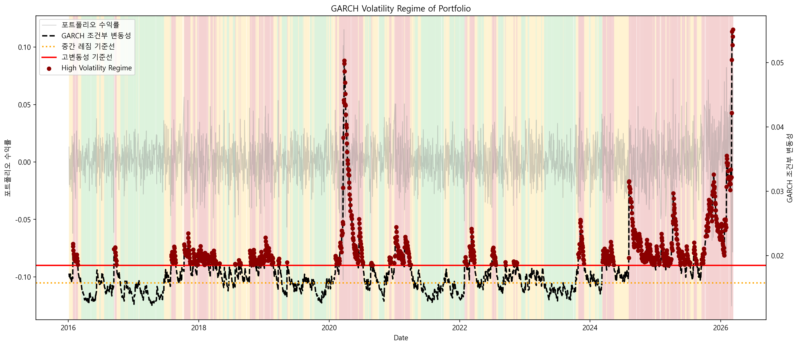

Korean Semiconductor Portfolio Risk Analysis
Python · Risk · Finance한국 반도체 산업 3개 기업(Samsung Electronics, SK Hynix, Samsung SDI) 포트폴리오를 대상으로 시장 리스크를 정량적으로 분석한 금융 데이터 프로젝트입니다. VaR, CVaR, GARCH 모델과 Kupiec Backtest를 활용해 변동성 체계와 tail risk를 분석했습니다.
- Problem: 반도체 포트폴리오의 하방 리스크와 변동성 구조를 정량적으로 측정
- Method: Historical VaR, Student-t VaR, CVaR, GARCH Volatility, Kupiec Backtest, Stress Testing
- Result: VaR/CVaR 분석을 통해 극단적 손실 구간의 tail risk를 확인하고, GARCH 기반 변동성 모델링을 통해 시장 스트레스 구간에서 리스크가 집중되는 volatility regime를 식별
- Tech Stack: Python, Pandas, NumPy, Matplotlib, ARCH, Financial Time Series



Risk Analysis Insights
- VaR Model Performance – Portfolio Return vs VaR 그래프에서 일부 구간에서 실제 손실이 VaR 예측 범위를 초과하는 VaR violation이 발생했습니다. 특히 시장 충격 기간에 violation이 집중되는 특징이 관찰되었습니다.
- Volatility Clustering – Forecast VaR와 Realized Return 비교에서 극단적 손실이 특정 기간에 집중적으로 발생하는 Volatility Clustering 현상이 확인되었습니다.
- Fat-Tail Risk – Student-t VaR는 Historical VaR보다 금융 수익률의 Fat Tail 특성을 반영하여 극단적 손실 가능성을 더 보수적으로 추정했습니다.
- Volatility Regime Shift – GARCH Volatility Regime 분석 결과 시장 변동성은 Low / Moderate / High regime 사이를 순환하며 특히 2020년 COVID 시장 충격 구간에서 High volatility regime이 집중적으로 나타났습니다.
- Dynamic Risk Management – 분석 결과 포트폴리오 리스크는 고정된 값이 아니라 시장 변동성 상태에 따라 지속적으로 변하기 때문에 Volatility Regime 기반의 동적 리스크 관리 전략이 필요합니다.